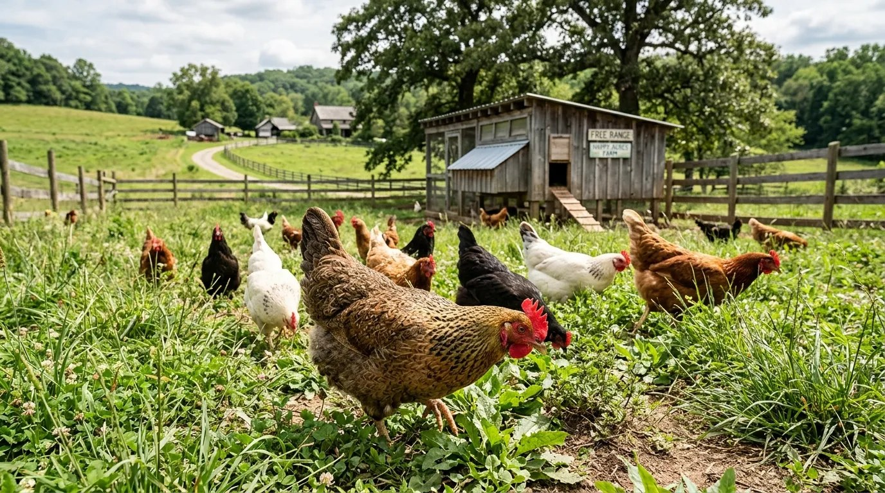
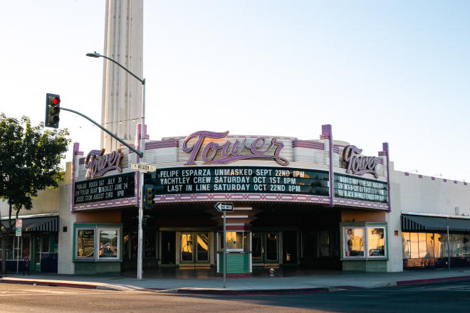

Lord, keep us humble. Keep our eyes on you and our hands on the work you gave us today. Do not let us worship what we build. In the name of Jesus, amen.
Everybody knows the old saying. Do not count your chickens before they hatch. A farmer can count his eggs. He cannot count his chickens until they hatch, because eggs break, hens wander, foxes come at night, and the weather does what it wants. The saying is not about pessimism. It is about honesty. Count what you have, not what you hope to have.
I want to talk about the new version of that saying, because we are all living in it. A man builds an idea with an AI. He writes the papers, prices the filing, and talks about terms, and the temptation sits right in front of him: to start living like the money is already in the bank and the future is already settled. Nothing is filed. Nothing is signed. Nothing is paid. The eggs are real. The chickens are not hatched yet. That is counting chickens before they hatch, and the Lord calls us to something better. Count what you have. Do the work in front of you. Leave the future to God.
Look around at the run-up we are living through. Artificial intelligence is everywhere, and right now the excitement has a name on it. People are saying Muse is the number one productivity app in the world. The rankings climb, the headlines pile up, and everybody wants in on the next big thing. The charts go up, and people get proud. They imagine a future that is big and certain and just around the corner. Then the market swings, and the certain future gets less certain. The run-up is volatile. The future people are imagining is not necessarily realistic. Pride grows fast when the numbers are green, and it rests on numbers that can turn red by morning. That is the air we are breathing right now.
Wait Like the Farmer
James 5:7
"Dear brothers and sisters, be patient as you wait for the Lord's return. Consider the farmers who patiently wait for the rains in the fall and in the spring. They eagerly look for the valuable harvest to ripen."
The farmer in this verse is not lazy. He planted. He watered. He did the work. Then he waited for the rains in the fall and in the spring, and he could not order the rain. He could only be faithful with the field and patient with the sky. That is the order God built into the world. Work first, then waiting.
The same order holds for the work we do with AI. Build the thing. Write the paper. File the form. Pay the fee. Then wait. The waiting is the work of trust. If you skip the waiting and jump straight to the spending, you have stopped trusting God and started trusting your own imagination. Do not eat the seed. Plant it, water it, and wait for the Lord to bring the rain.

The Pride of the Run-Up
James 4:13-14
"Look here, you who say, 'Today or tomorrow we are going to a certain town and will stay there a year. We will do business there and make a profit.' How do you know what your life will be like tomorrow? Your life is like the morning fog, it's here a little while, then it's gone."
James is talking straight to the builders and the business people. Today or tomorrow we are going to a certain town, and we will stay there a year. We will do business there and make a profit. That is the voice of the run-up. It sounds like a plan, but it is a boast. It assumes the road stays open, the market stays up, and tomorrow behaves itself. James asks the question nobody in a bull market wants to hear. How do you know what your life will be like tomorrow.
Proverbs 27:1
"Don't brag about tomorrow, since you don't know what the day will bring."
Do not brag about tomorrow, since you do not know what the day will bring. The market does not know what the day will bring either. The charts can climb for a month and fall in a morning. Nobody saw it coming, because nobody can see tomorrow. That is not a reason to stop building. It is a reason to build without bragging. Be faithful to your own intent for productivity, and do it inside the Lord. Do the work that is in front of you, do it well, and leave the future to God.
Look at the men on LinkedIn carrying huge burn rates, spending like the work will never end. They have become very accomplished at what they do, and they assume the employment goes on into perpetuity. But circumstances change. In the words of John Maynard Keynes, when circumstances change, I change my mind. What do you do, sir? A wise man changes his mind when the facts change. A proud man keeps spending a future he does not have.

The False Idol
Exodus 20:3-4
"You must not have any other god but me. You must not make for yourself an idol of any kind or an image of anything in the heavens or on the earth or in the sea."
God gave that commandment first, because He knew what we would do. We would take the good things He gave us and turn them into gods. We would build something with our own hands and then bow down to it.
Remember the golden calf. Moses was up on the mountain, and the people got impatient waiting. So they took their own gold and melted it down and shaped it into a calf. Then they stood in front of what their own hands had made and called it the god who brought them out of Egypt. They worshiped their own work. They gave their own creation the credit that belonged to God.
That is what a false idol is. It is not always a statue. Sometimes it is a tool. Sometimes it is a machine that can write and remember and calculate, and we start to talk like it is going to save us. We start to think that man's inventions are going to become more powerful than God. They will not. God made the men who made the inventions. A tool can help you work, and a tool can help you remember, but a tool cannot save your soul. Only the Lord saves. If you bow to the tool, you have built yourself a golden calf, and it will not lead you out of Egypt.
This message was put together with Muse, the app people are calling the number one productivity app in the world right now. I use the tool. I thank God for the tool. But I know better than to worship the tool. I will not worship the app. I will not worship Facebook. I will not worship Mark Zuckerberg. I will not worship the NASDAQ. I will not worship Donald Trump. I will not worship a political party, not even after a sweeping blue wave. A tool is a tool. A man is a man. A market is a market. A party is a party. Only the Lord is God.
Count the Cost
Luke 14:28
"But don't begin until you count the cost. For who would begin construction of a building without first calculating the cost to see if there is enough money to finish it?"
Jesus is talking about a tower. Everybody wants to build high. Nobody wants to sit down first and count the cost. Counting the cost is not doubt. It is honesty. It is asking whether you can finish what you started.
A builder prices his project before he breaks ground. The materials cost what they cost. The waiting is real. The work is real. If you pretend the cost is already paid, you will build on a foundation you cannot finish, and Jesus says everyone will laugh at you. Not because they are cruel, but because the unfinished tower is there for everybody to see. Faithfulness to your own intent means you count the cost before you build, you pay what it costs, and you do not spend the future before it arrives. Do the work that is in front of you today, productively, inside the Lord. That is the whole assignment.
God Gives the Increase
1 Corinthians 3:6-7
"I planted the seed in your hearts, and Apollos watered it, but it was God who made it grow. It's not important who does the planting, or who does the watering. What's important is that God makes the seed grow."
Paul planted. Apollos watered. God made it grow. Notice the order. The men did real work, and the work mattered. But the growth belonged to God. The increase came from the Lord, and that is why the credit belongs to the Lord.
Psalm 127:1
"Unless the Lord builds a house, the work of the builders is wasted. Unless the Lord protects a city, guarding it with sentries will do no good."
Unless the Lord builds the house, the work of the builders is wasted. That is not a warning against building. It is a warning against building without the Lord. Build the house, and build it with the Lord. Your productivity has a purpose when it stays inside the Lord. Your intent is a good intent when it is offered to God and not to your own pride. Do the work, give thanks, stay humble, and let God bring the increase. He knows how to grow what you planted. You do not.
The Charge
Romans 12:19
"Dear friends, never take revenge. Leave that to the righteous anger of God. For the Scriptures say, 'I will take revenge; I will pay them back,' says the Lord."
I am a servant of the Lord, and this is public service. This message is a calling and a signal. If you have decided that other things matter more to you than the Lord, hear it plainly. If you believe in a higher power, be concerned about the righteousness of the Lord, and about His vengeance, if you stray from His guidance. Vengeance belongs to Him, not to you and not to me, and He will repay.
So here is the charge, and it is simple. Work today. Pray today. Stay humble today. Give thanks for the eggs, and do not sell the chickens before they hatch. Do not bow to the calf. Do not brag about tomorrow. Do not spend the future before it arrives. Be faithful to the intent God put in you, and be productive inside the Lord, not outside Him. The tools will change. The markets will swing. The Lord does not change. Put your trust there, and your work will stand.
Matthew 6:34
"So don't worry about tomorrow, for tomorrow will bring its own worries. Today's trouble is enough for today."
Lord, we give you the work of our hands and the plans in our hearts. Keep us from pride. Keep us from idols. Teach us to wait like farmers and to count the cost like builders. In the name of Jesus, amen.
Sources
Photographs. Free range hens, World Animal Foundation. Tower Theatre, Visit Fresno County. United States Capitol, Wikimedia Commons.